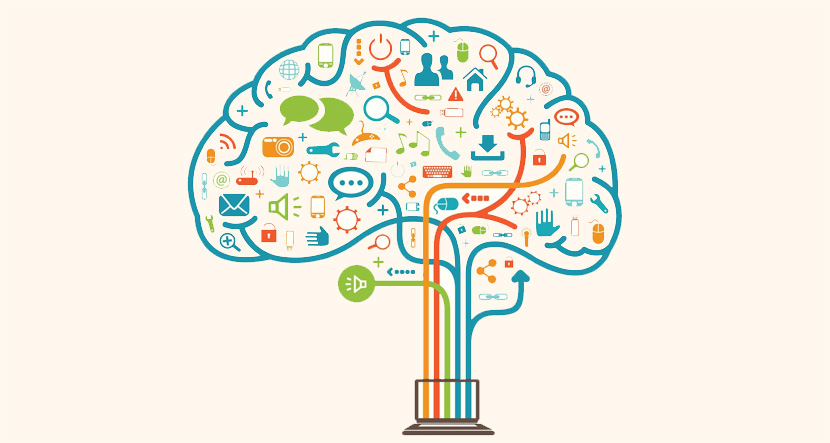
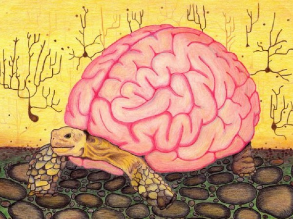
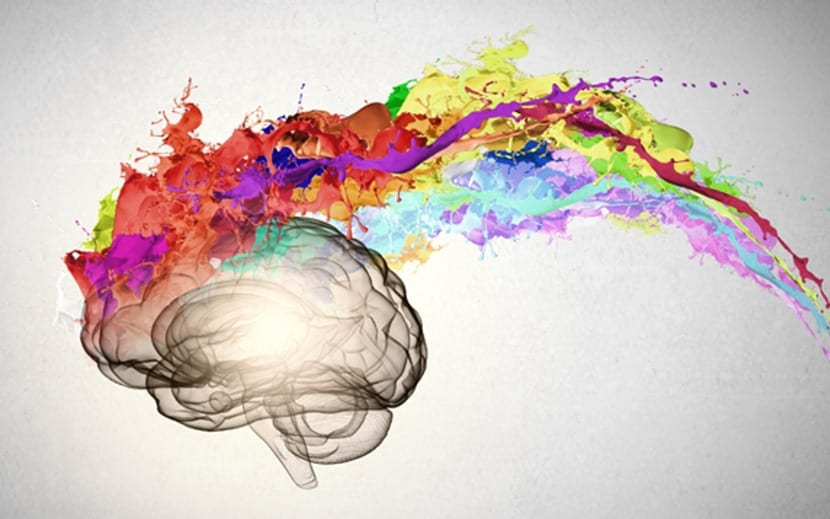
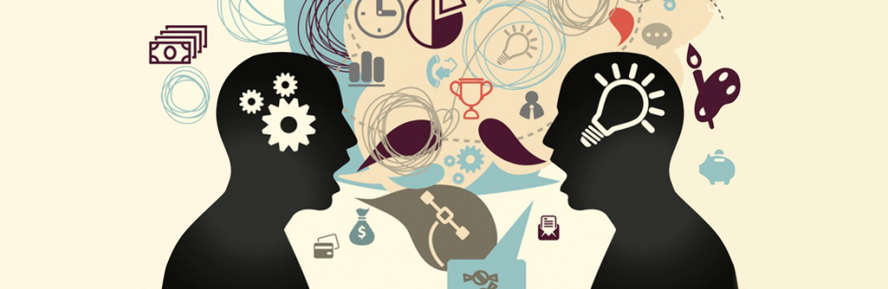

Formas de pensar
Como venimos diciendo, clasificar el pensamiento en grupos cerrados es reducir algo muy complejo como es la
forma humana de pensar. De todos modos, como es bien sabido por la Psicología, las personas podemos
presentar distintas formas de estructurar nuestros pensamientos.
También hay que tener en cuenta que no hay que ir en busca en esta lista de “nuestra forma de pensamiento”, pues
dependiendo ya no solo de la situación, sino de nuestro estado anímico, de nuestras experiencias, del tema
tratado o del contexto, podemos tener tendencia a muchos de los siguientes pensamientos.
El pensamiento una forma de crear
Algo complejo de entender, pero muy significativo en el hecho de que el pensamiento es algo que crea o percibe
las nociones del tiempo, del espacio, infinidades de cosas, que nos trasmite o lleva a una realidad totalmente
dependiente de el.

Pensamiento Directo
Esta forma o modo de pensamiento, suele darse si la meta o el problema es percibido por el sujeto como sencillo
o simple. Generalmente, se la encuentra asociada al pensamiento lineal; en donde la causa y efecto se relaciona
directamente.
Pensamiento Algorítmíco
El pensamiento algorítmico garantiza la solución de un problema. Es un conjunto de reglas u operaciones,
usualmente ligado a las matemáticas. Una vez formulada una solución algorítmica, puede ser utilizada por otros,
incluso sin comprender la razón por la cual funciona.
Pensamiento Heurístico
Este tipo de pensamiento, habitualmente, puede ocurrir como un atajo mental que puede llevar a una solución. La
heurística es observada como «la indagación del descubrimiento». En algunas ciencias, es la manera de buscar la
solución de un problema mediante métodos no rigurosos, como por tanteo, reglas empíricas, etc.

Pensamiento Sistémico
El pensamiento sistémico es la actitud del ser humano, que se basa en la percepción del mundo real en términos
de
totalidades para su análisis, comprensión y accionar, a diferencia del planteamiento del método científico, que
sólo percibe partes de éste y de manera inconexa.
Pensamiento Divergente
El pensamiento divergente, también conocido como pensamiento lateral, es un tipo de razonamiento que discute,
duda, y busca alternativas de forma constate.
Es un proceso de pensamiento que permite generar ideas creativas a través de la exploración de múltiples
soluciones.
Constituye la antítesis del pensamiento lógico y tiende a aparecer de forma espontánea y fluida.
Pensamiento Convergente
Por su lado, el pensamiento convergente resulta un tipo de razonamiento opuesto al pensamiento divergente.
Se caracteriza por funcionar a través de asociaciones y relaciones entre elementos. No posee la capacidad de
imaginar,buscar o indagar pensamientos alternativos, y suele conducir al establecimiento de una sola idea.

Pensamiento Synvergente
Este tipo de razonamiento, de reciente aparición y acuñado por Michael Gelb, hace referencia a la combinación
entre el pensamiento divergente y el pensamiento convergente.
Así pues, es una forma de pensar que incluye los aspectos detallistas y evaluadores del pensamiento convergente,
y los relaciona con los procesos alternativos y novedosos referentes al pensamiento.
